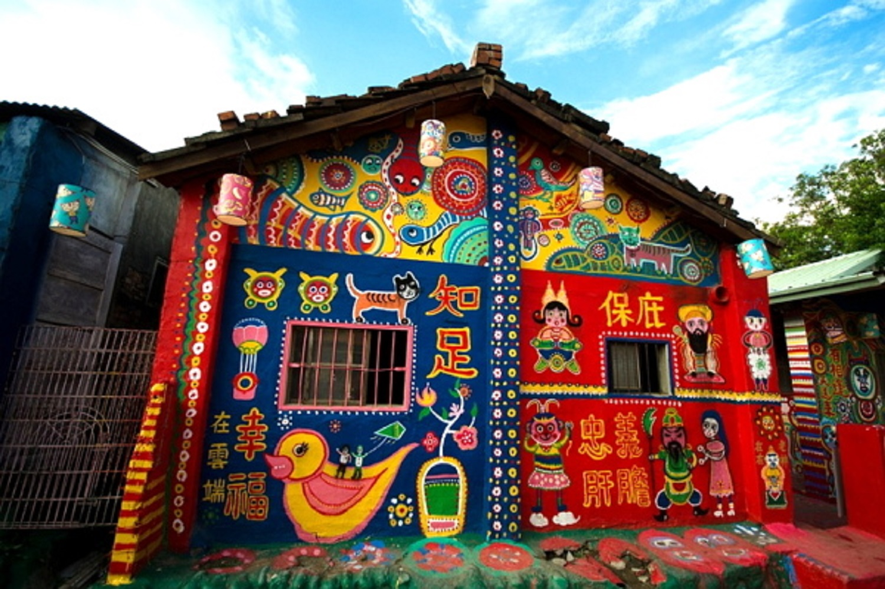
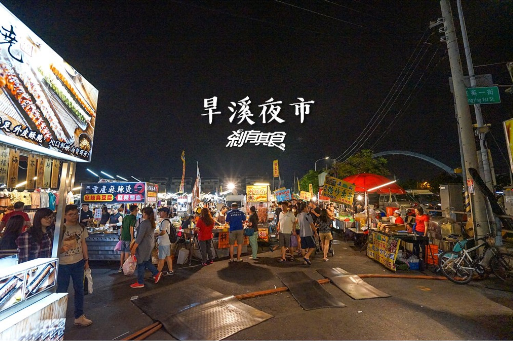

-

審計新村
台中政府將以前的老宿舍規劃給創業青年們作為青創基地，幫助不少初期創業的青年，也茁壯了很多人的夢想，讓沈寂的審計新村悄悄地醒了過來。
地址:台中市西區民生路368巷1弄6號
-

高美濕地
高美濕地擁有全臺灣最大的雲林莞草草澤，孕育豐富多變的生態，形成完整的濕地體系，候鳥留鳥都對濕地有愛，蝦兵蟹將霸氣橫行。
地址:臺中市清水區大甲溪出海口
-
中科落羽松
中科落羽松秘境 是台中落羽松中少數可以一次拍到陸上版和水上版兩種不同風格的美照，走在中科落羽松水中木棧道上，搭配兩旁水中絕美倒影，讓人有種置身水上人家的錯覺。
地址:台中市西屯區光明路257號
-

台中軟體園區
台中軟體園區 Dali Art藝術廣場蒐集來自在地與全球的藝術、展演和文創作品，匯聚當代重要藝術家、藝文創作者，打造欣賞、創作多元一體的新亮點，滿足您對文創藝術的各種想像與想望！
地址:台中市大里區科技路1號
-

彩虹眷村
因榮民住戶黃永阜在待拆除的老屋上作畫，而有「彩虹爺爺」之稱，並引發學生蔡克斯等發動「搶救彩虹村」活動，臺中市政府以市地重劃方式將該處闢劃為公園而保存。
地址:台中市南屯區春安路56巷25號
-

國家歌劇院
因為它無樑柱的"曲牆"建築工法，日本建築界認為，不可能蓋得起來。最後由台灣麗明建築團隊完成，成為世界第九大新地標，也是台中新地標, 我們的驕傲。
地址：臺中市西屯區惠來路二段101號
-

麗寶OUTLET MALL
「麗寶Outlet Mall」以快樂為出發點，實現每一個人對於渡假休閒更美好的夢想。 Outlet外觀就運用義大利渡假小鎮多彩繽紛的Portofino建築外觀搭配全台灣最大摩天輪「天空之夢」。
地址：台中市后里區福容路201號
-

旱溪夜市
旱溪夜市位在台中市東區，約六千坪有三百多個攤商，每週二、四、五、六往往擠滿人潮與美食小吃，與逢甲商圈的大型觀光夜市不同，旱溪夜市反而是在地人平時逛街、吃點心的好去處。
地址：台中市東區旱溪東路一段
-
粉紅情人橋
這座大坑粉紅情人橋，是以數十條鋼纜拉出的斜張橋，搭配著玻璃橋面，整個構造相當特別，粉色的色調，也讓整座橋吸睛度十足。
地址：台中市北屯區部子路366號
-

綠色瀑布
隱藏在台中龍井龍新路一帶的「綠色瀑布」，是座被野生越橘葉蔓榕攀滿的小山坡，順著坡形生長，如同畫上一道道流水般的線條。
地址：台中市龍井區龍新路18號